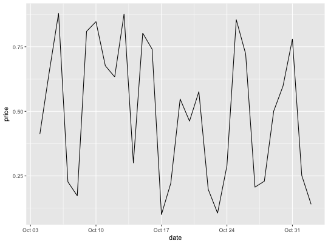
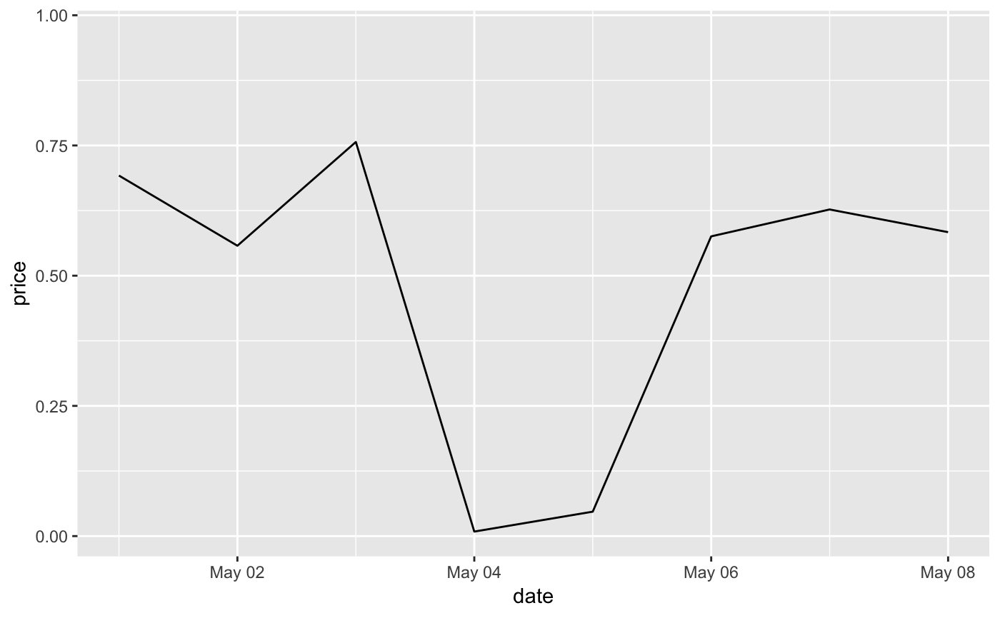
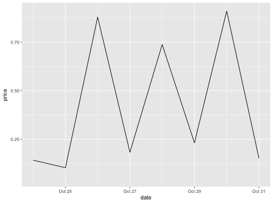

These are the default scales for the three date/time class. These will
usually be added automatically. To override manually, use
scale_*_date for dates (class Date),
scale_*_datetime for datetimes (class POSIXct), and
scale_*_time for times (class hms).
scale_x_date(name = waiver(), breaks = waiver(), date_breaks = waiver(), labels = waiver(), date_labels = waiver(), minor_breaks = waiver(), date_minor_breaks = waiver(), limits = NULL, expand = waiver(), position = "bottom") scale_y_date(name = waiver(), breaks = waiver(), date_breaks = waiver(), labels = waiver(), date_labels = waiver(), minor_breaks = waiver(), date_minor_breaks = waiver(), limits = NULL, expand = waiver(), position = "left") scale_x_datetime(name = waiver(), breaks = waiver(), date_breaks = waiver(), labels = waiver(), date_labels = waiver(), minor_breaks = waiver(), date_minor_breaks = waiver(), timezone = NULL, limits = NULL, expand = waiver(), position = "bottom") scale_y_datetime(name = waiver(), breaks = waiver(), date_breaks = waiver(), labels = waiver(), date_labels = waiver(), minor_breaks = waiver(), date_minor_breaks = waiver(), timezone = NULL, limits = NULL, expand = waiver(), position = "left") scale_x_time(name = waiver(), breaks = waiver(), minor_breaks = waiver(), labels = waiver(), limits = NULL, expand = waiver(), oob = censor, na.value = NA_real_, position = "bottom") scale_y_time(name = waiver(), breaks = waiver(), minor_breaks = waiver(), labels = waiver(), limits = NULL, expand = waiver(), oob = censor, na.value = NA_real_, position = "left")
The name of the scale. Used as axis or legend title. If
NULL, the default, the name of the scale is taken from the first
mapping used for that aesthetic.
One of:
NULL for no breaks
waiver() for the default breaks computed by the
transformation object
A numeric vector of positions
A function that takes the limits as input and returns breaks as output
A string giving the distance between breaks like "2
weeks", or "10 years". If both breaks and date_breaks are
specified, date_breaks wins.
One of:
NULL for no labels
waiver() for the default labels computed by the
transformation object
A character vector giving labels (must be same length as breaks)
A function that takes the breaks as input and returns labels as output
A string giving the formatting specification for the
labels. Codes are defined in strftime. If both labels
and date_labels are specified, date_labels wins.
One of:
NULL for no minor breaks
waiver() for the default breaks (one minor break between
each major break)
A numeric vector of positions
A function that given the limits returns a vector of minor breaks.
A string giving the distance between minor breaks
like "2 weeks", or "10 years". If both minor_breaks and
date_minor_breaks are specified, date_minor_breaks wins.
A numeric vector of length two providing limits of the scale.
Use NA to refer to the existing minimum or maximum.
A numeric vector of length two giving multiplicative and
additive expansion constants. These constants ensure that the data is
placed some distance away from the axes. The defaults are
c(0.05, 0) for continuous variables, and c(0, 0.6) for
discrete variables.
The position of the axis. "left" or "right" for vertical scales, "top" or "bottom" for horizontal scales
The timezone to use for display on the axes. The default
(NULL) uses the timezone encoded in the data.
Function that handles limits outside of the scale limits (out of bounds). The default replaces out of bounds values with NA.
Missing values will be replaced with this value.
Other position scales: scale_x_continuous,
scale_x_discrete
last_month <- Sys.Date() - 0:29 df <- data.frame( date = last_month, price = runif(30) ) base <- ggplot(df, aes(date, price)) + geom_line() # The date scale will attempt to pick sensible defaults for # major and minor tick marks. Override with date_breaks, date_labels # date_minor_breaks arguments. base + scale_x_date(date_labels = "%b %d")base + scale_x_date(date_breaks = "1 week", date_labels = "%W")base + scale_x_date(date_minor_breaks = "1 day")# Set limits base + scale_x_date(limits = c(Sys.Date() - 7, NA))#> Warning: Removed 22 rows containing missing values (geom_path).